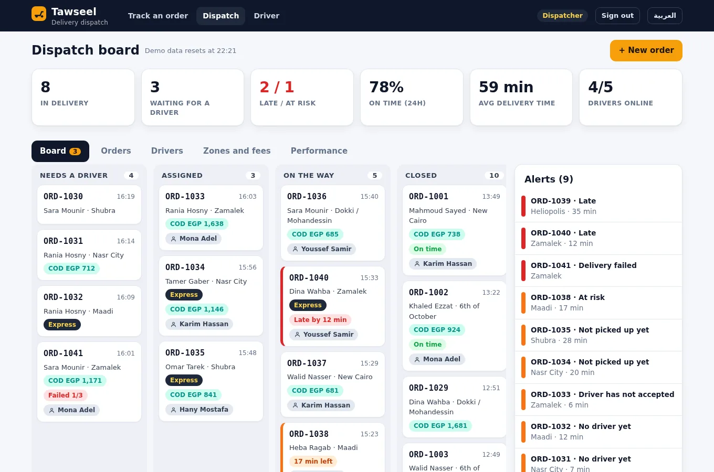
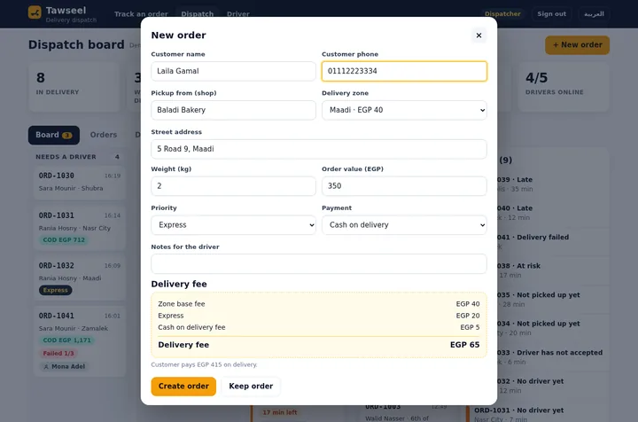
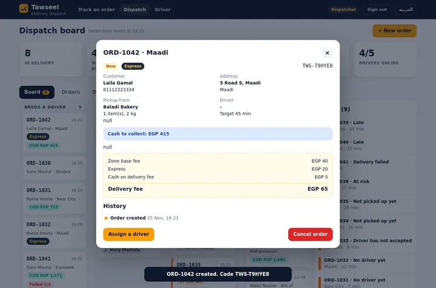
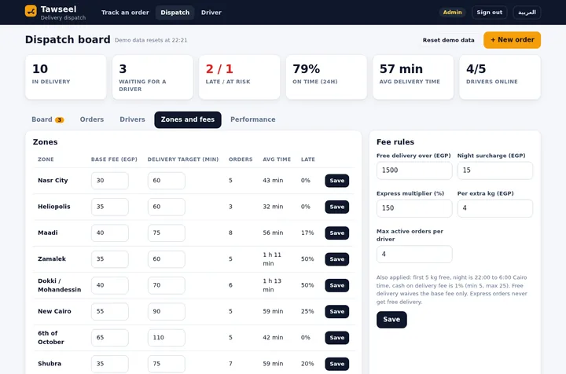
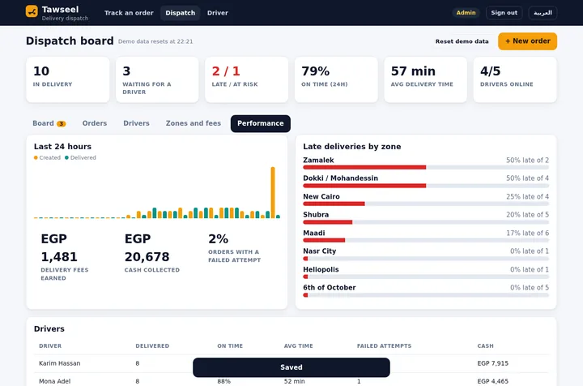
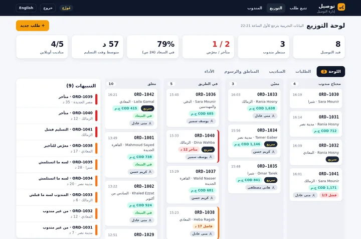
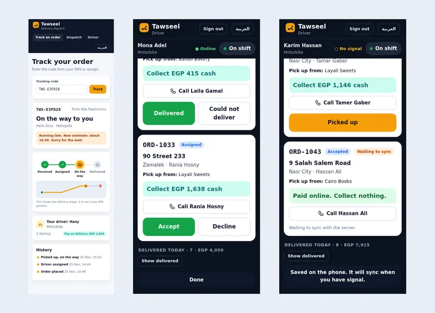

PORTFOLIO DEMO / BUILT / LIVE DEMO
Tawseel
Every order, from the shop to the door.

ACTUAL BUILDTawseel · Dispatch board. Fictional demo data.
The problem
Small delivery teams in Cairo run on WhatsApp groups and phone calls. Orders get lost between the shop and the driver, nobody knows which order is about to be late, customers keep calling to ask where their delivery is, and the cash a driver collects is counted at the end of the day, if at all. Fees are worked out by hand and change from driver to driver.
What was built
A delivery dispatch system with three faces. Customers open a tracking page with a code like TWS-AB23CD and see the stage of their order, an estimated arrival, a delay notice when it runs late and the driver's first name, and nothing private. Dispatchers get a board with four stages, an orders table with filters, a new order form with a live fee quote, driver assignment that lists drivers covering the zone first and blocks offline or full drivers, cancel with a reason, retry for failed deliveries (three attempts, then cancel only), an alerts panel and a performance tab. Drivers get a mobile view to accept or decline, mark pickup, deliver with a proof note and the cash collected, or report why they could not deliver.
Fees follow rules an admin can edit: a base fee per zone, a weight surcharge above five kilos, an express multiplier, a night surcharge from 22:00 to 06:00 Cairo time, free delivery over a threshold that waives only the base fee and never applies to express, and a cash on delivery fee of one percent between 5 and 25 pounds. Each zone has a delivery target, and the board marks orders at risk, late, without a driver, not accepted or not picked up. When the driver enters a different cash amount than the order total, the mismatch is stored and flagged instead of hidden. Roles split admin, dispatcher, driver and viewer. The interface is fully Arabic right-to-left or English.
The approach
No framework: plain JavaScript pages and one serverless API function. The business rules live in a pure logic module: fee rules, the status state machine, SLA states, alerts, stats and validation, including Egyptian mobile numbers with Arabic digits. Every transition is checked on the server, so a driver cannot touch another driver's order and a viewer cannot write, whatever the screen shows. The driver view saves actions on the phone when there is no signal and replays them with unique ids when it returns, so a retry never applies twice; if the server refuses a saved action because the dispatcher reassigned the order in the meantime, the action is dropped and the driver is told. State is stored in Vercel Blob as one immutable blob per version, and a writer that loses a race retries on top of the winner, which kept all eight parallel writes in the final test. Thirty-three unit and API tests pass, and eighteen scripted browser checks against the live site walk the real flow: create an order, see it on the board, assign it, accept, pick up and deliver on a phone-sized screen, follow it on the tracking page, then the offline queue, a refused sync, Arabic, admin fee edits, viewer limits and parallel writes.
The result
A live demo anyone can open. Pick a role on the dispatch page, or a driver profile on the driver page, and open the tracking page with any of the sample codes on the home page. The sample day has delivered, late, failed and cancelled orders so every alert and chart has something to show.
Evidence & production limits
One shared demo workspace that resets every six hours: everyone sees and changes the same orders. Sign-in is a role picker with no passwords, so it must not hold real customer data. People, phone numbers, addresses, prices and revenue are fictional. Tracking shows the delivery stage and an estimate based on the zone target; it is not a live GPS position, and the map is an illustration of the stage. No SMS or WhatsApp messages are sent to customers.
Known gaps: the offline support covers the driver's actions and the app shell, not a first load with no connection; under heavy load a write can answer "busy" and needs a retry; there is no payment or settlement flow, only cash entered by the driver; and routes and distances are not calculated. Direction, scope and delivery: Nada Gamal.
Next chapter
Real sign-in with passwords, a proper database, live driver location, SMS or WhatsApp tracking links, route-based fees and cash settlement at the end of a shift would be the next implementation steps.
Inside the build
Open any preview to see the full capture. Captures show test or demonstration content. All records shown are demonstration content, not evidence of client use.





